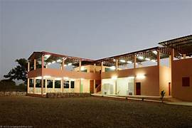

Welcome to [Sevashram Name], a sanctuary of warmth, care, and dignity for our cherished elders. Located in the peaceful surroundings of [City], [Sevashram Name] is devoted to providing a safe and nurturing home for individuals aged 60 and above.
Our mission is to offer a supportive environment where our residents can enjoy their golden years with grace, comfort, and companionship. We believe that every individual deserves respect, love, and the best care possible, regardless of age.
[Sevashram Name] is more than just a residence; it's a community where each member is valued and their stories are cherished. Our dedicated team of caregivers and volunteers works tirelessly to ensure that our residents receive personalized attention, healthcare, and emotional support.
We offer a wide range of activities and programs designed to engage, entertain, and inspire our residents. From yoga and meditation sessions to art classes and cultural events, we strive to create an atmosphere of joy and fulfillment.
At [Sevashram Name], we also prioritize the health and well-being of our residents. Our on-site medical facilities and regular health check-ups ensure that their physical needs are met promptly and efficiently.
Family involvement and community engagement are at the heart of our approach. We encourage families to stay connected and participate in our residents' lives, fostering a sense of belonging and continuity.
Your support helps us continue this vital work. Whether through donations, volunteering, or spreading the word, you play a crucial role in making [Sevashram Name] a true haven for our elders.
Join us in celebrating life, sharing moments of joy, and providing a dignified, caring home for our seniors. Thank you for your continued support and belief in our mission.

seva aashram
trust
Delhi